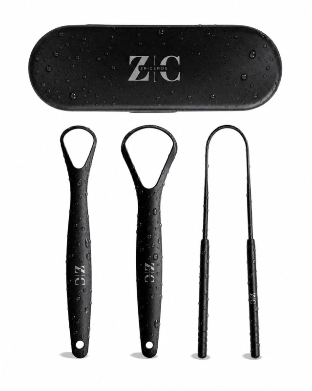
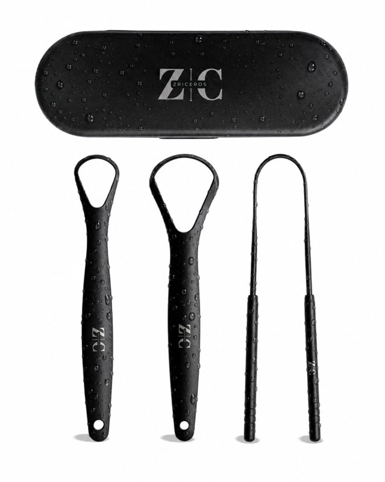
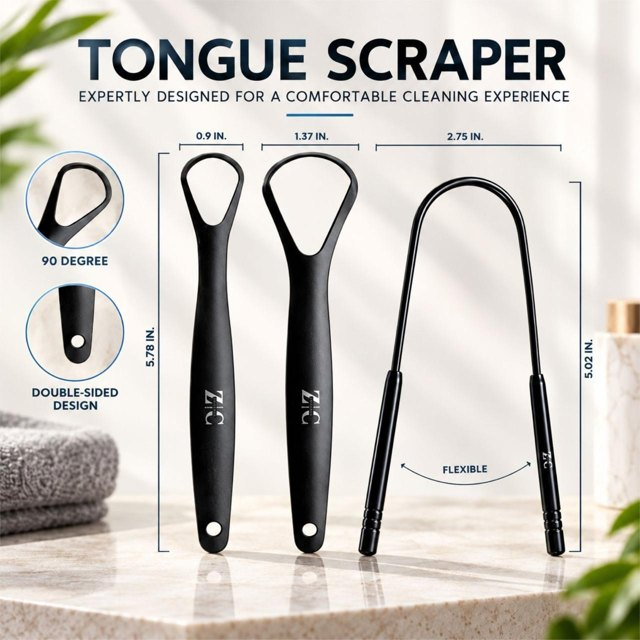
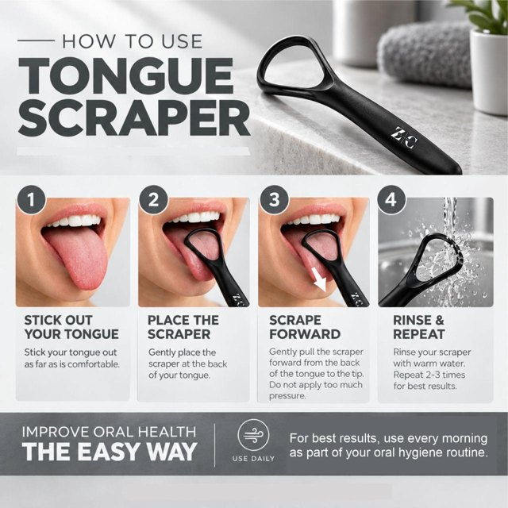
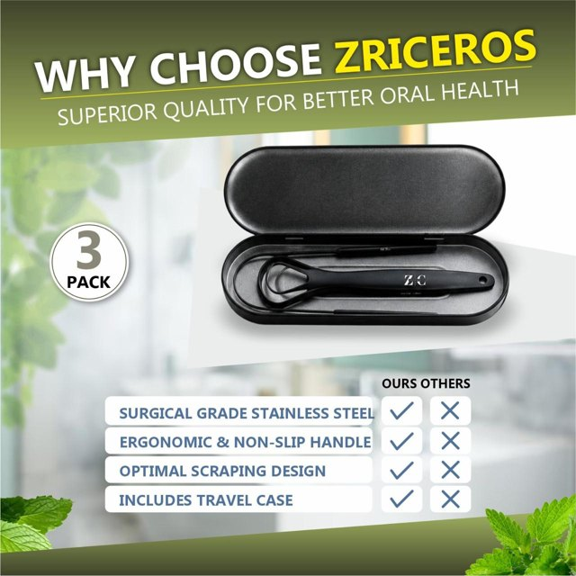
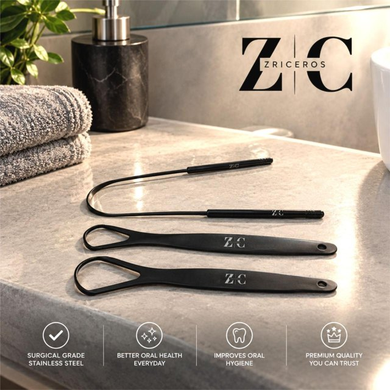
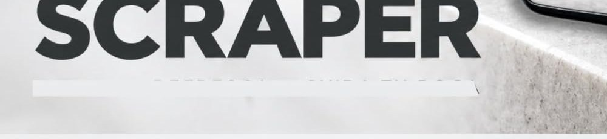
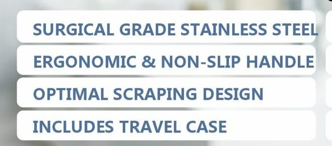
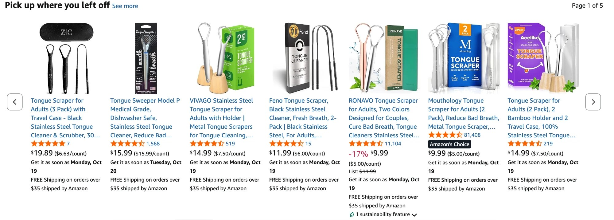

La mejor semana del proyecto. 11 pedidos (el récord era 9, en
la semana 3), ACoS 24,9% y +$44,48. Es la primera semana con ganancia desde la
semana 1, y la ganancia más alta de las seis. El acumulado pasa de −$125,21 a
−$80,73: la semana recuperó un tercio de todo lo perdido.
No la hicieron las imágenes nuevas: se subieron el 13-10, el último día
de la semana. Seis de los siete días el anuncio salió con la imagen vieja.
Las ventas de la semana 6 son de la campaña tal como estaba, y la semana 7 es la
primera que va a mostrar qué hacen las imágenes.
Lo que sí la explica: la plata fue a las búsquedas. La automática
hizo 45 clics de búsqueda, 8 pedidos y +$27,82. Convirtió 17,8%, lo esperable con su
15,5% de seis semanas (no hace falta suerte para eso). Lo que cambió es dónde se
gastó: en la semana 5, dos tercios del gasto fueron a fichas ajenas; en la 6, menos
de un quinto. Es el escenario que la semana 5 marcaba como «el que gana plata», y
ahora se dio solo, sin tocar nada.
Las fichas ajenas bajaron solas de 48 a 12 clics, y esta vez
vendieron (3 pedidos, +$16,66). No se apagaron: cinco tienen líneas hasta
el 13-10. La ficha que en la semana 5 se llevó 5.907 impresiones (B0H8T6KG6N) ya no
aparece, y con eso se fue la mayor parte del gasto en fichas. Esas tres ventas sí
tienen algo de suerte (3 veces cada cien con la conversión acumulada), pero mueven la
cuenta: con seis semanas convierten 6,1% (eran 2,9%), y a ese número una puja de
$0,50 ya no pierde. Por eso el paso 1 cambia: en vez de apagarlas, bajarles la
puja.
El CTR de «tongue scraper» subió de 0,45% a 0,76% con la imagen
vieja. No fue la imagen. Esa búsqueda dio menos impresiones por día (283
contra 373 de la semana 5) y la misma cantidad de clics: el anuncio ganó menos
subastas pero mejores. Es lo contrario de lo que pasó en la semana 3. Para medir
las imágenes nuevas, la base deja de ser 0,45% y pasa a ser 0,76%, la última
semana con la imagen vieja.
La imagen principal nueva cumple todo lo que se pidió, y en la
miniatura se distingue de las demás. Vertical, fondo blanco, producto en
el 86% del alto. En el carrusel de Amazon es la única negra y sin caja de color,
pero ocupa menos de la casilla que las otras: una imagen vertical dentro de una
casilla cuadrada. Su precio por unidad ($6,63) queda en el rango de las demás
($5,00 a $7,50), aunque el total ($19,89) sea el más alto. Sección 4.
La marca empieza a aparecer. Alguien buscó «zricezos tongue
cleaner» (la marca mal escrita) y compró. Y buscar «zriceros» en amazon.com hoy
devuelve la ficha primera, aunque Amazon todavía sugiere «sorceros»; el 29-08 no
la devolvía.
Siete calificaciones, 5,0, sin cambios. Ranking en la
categoría: #175 (semana 5: #154); en Health & Household, #189.200. El registro
de solicitudes de reseña sigue vacío, y a los pedidos del 14 al 20 de septiembre se
les vence el botón esta semana (paso 3).
2. Las seis semanas lado a lado
Semana 1
Semana 2
Semana 3
Semana 4
Semana 5*
Semana 6
Acumulado
Gasto
$18,66
$75,19
$92,32
$85,12
$87,92
$54,52
$413,73
Clics
11
34
53
56
91
57
302
CPC
$1,70
$2,21
$1,74
$1,52
$0,97
$0,96
$1,37
Pedidos
4
5
9
1
6
11
36
Unidades
5
5
9
1
6
11
37
Ventas
$99,45
$99,45
$179,01
$19,89
$119,34
$218,79
$735,93
Conversión (pedidos / clics)
36,4%
14,7%
17,0%
1,8%
6,6%
19,3%
11,9%
ACoS
18,8%
75,6%
51,6%
428%
73,7%
24,9%
56,2%
Ganancia neta
+$26,34
−$30,19
−$11,32
−$76,12
−$33,92
+$44,48
−$80,73
Impresiones
2.046 (panel)
4.080 o más
10.485 o más
6.910 o más
11.999 o más
3.980 o más
—
CTR
0,54%
0,83% o menos
0,51% o menos
0,81% o menos
0,76% o menos
1,43% o menos
—
Gastó menos que cualquier semana desde la 1 y vendió más que todas.
El CPC es el mismo de la semana 5 ($0,96): lo que cambió es dónde fue la plata. En la
semana 5, dos tercios del gasto fueron a fichas ajenas; en la 6, menos de un quinto
($10,34 de $54,52).
* La semana 5 tiene nueve días (28-09 al 06-10). La 6 tiene los
siete de siempre. El informe de términos trae todos los clics pero sólo las
impresiones de las búsquedas con algún clic: las impresiones son un piso y el CTR un
techo. Amazon atribuye una compra hasta 7 días después del clic, así que los clics
del 8 al 13 de octubre todavía pueden sumar ventas.
3. Búsquedas y fichas ajenas, seis semanas
Dónde salió
Campaña
Clics
Pedidos
Conversión
CPC
Gasto
ACoS
Neto
Búsquedas
automática
103
16
15,5%
$0,96
$98,84
31,1%
+$45,16
Búsquedas
PRIMALS
42
8
19,0%
$2,37
$99,40
55,5%
−$18,40
Fichas ajenas
automática
82
5
6,1%
$0,89
$72,90
73,3%
−$27,90
Fichas ajenas
PRIMALS
75
7
9,3%
$1,90
$142,59
102%
−$79,59
Búsquedas
las dos
145
24
16,6%
$1,37
$198,24
39,9%
+$26,76
Fichas ajenas
las dos
157
12
7,6%
$1,37
$215,49
90,3%
−$107,49
La línea que separa lo que gana de lo que pierde sigue siendo la
misma. Con seis semanas, las búsquedas convierten 16,6% y ganan; las fichas
ajenas convierten 7,6% y explican toda la pérdida que queda. Lo que la semana 6
movió es el tamaño de cada lado: las búsquedas pasaron de empate (−$1,06) a
ganancia (+$26,76).
Lo de las fichas ajenas esta semana. 12 clics, 3 pedidos. Si
siguieran convirtiendo 6,1%, sacar 3 pedidos o más en 12 clics pasaría 3 veces cada
cien: es poco probable, pero son 12 clics, y la regla del proyecto es no sacar
conclusiones de conversión con menos de ~40. Las tres ventas salieron de fichas
distintas entre sí: un kit de $31,99, un kit de gel de $9,99 y un 2 pack de $7,99.
No es la imagen, que llegó el último día. La semana 7, a $0,50, va a decir si
fue suerte.
4. Las imágenes nuevas (en la ficha desde el 13-10)
Antes: 51MqYyt1dBL, 896 × 1195.

Desde el 13-10: 61QDX1XG2oL, 1278 × 1600.
Antes
Hoy
Lo que se pidió
Formato
896 × 1195 vertical
1278 × 1600 vertical (4:5)
1600 × 2000 vertical (4:5)
Producto en el alto del cuadro
58%
86%
85% o más
Producto en el ancho del cuadro
90%
82%
—
Producto en la miniatura del celular
137 × 117 pt
124 × 163 pt (+26%)
≈ 125 × 160 pt (+25%)
Producto en la grilla de PC
148 × 127 pt
143 × 189 pt (+44%)
≈ 145 × 185 pt (+43%)
Fondo
blanco
blanco; bordes entre 251 y 255
255, 255, 255
Cosas que no vienen en la caja
ninguna
ninguna
ninguna
Estuche
entero, al lado de la caja
entero, arriba, con el logo
entero, arriba
Salió como se pidió. Las seis correcciones de la semana 5
están todas: el formato vertical, el fondo blanco sin piso ni reflejo, sin menta,
las dos alturas sin la caja, el 85% del alto y el negro mate con gotas. La
resolución es menor que la pedida (1278 × 1600 en vez de 1600 × 2000)
pero tiene la misma proporción y pasa de 1.000 px, que es lo que necesita el zoom.
Los tamaños medidos coinciden con lo que la semana 5 había estimado.
Las cinco imágenes de la publicación
Son las cinco que tiene hoy la ficha, en el orden en que aparecen. Las cuatro
secundarias son cuadradas de 1280 × 1280; la principal es la vertical de
arriba.

1 · Principal

2 · Medidas

3 · Cómo usar

4 · Por qué Zriceros

5 · Ambiente
Imagen
Lo que hace bien
Lo que hay que corregir
1 · Principal (fondo blanco)
Cumple las reglas de la principal: blanco, sin accesorios, producto en el 86% del alto. Es vertical, así que en el celular llena la casilla. El negro mate con gotas la separa de los raspadores de acero brillante que la rodean en los resultados, y el estuche con el logo arriba muestra el «with Travel Case» del título.
Nada. Es la que el informe de la semana 7 va a medir.
2 · Medidas
Contesta la duda más común antes de comprar (si entra en la boca, si es grande) con las medidas de los tres, y muestra que son tres diseños distintos, que es lo que explica el bullet 1.
Nada importante. «90 DEGREE» no dice qué tiene 90 grados; si se rehace, «90° scraping edge».
3 · Cómo usar
Cuatro pasos claros con fotos: le saca el miedo a quien nunca usó uno, que es buena parte de los que buscan «tongue scraper».
Un rectángulo debajo de TONGUE SCRAPER tapa un renglón y se ven las puntas de las letras (recorte abajo). La frase «For best results…» está en otra tipografía que el resto.
4 · Por qué Zriceros
El «3 PACK» y el estuche abierto; la tabla resume en cuatro renglones la diferencia con los de $4 a $6.
«SURGICAL GRADE STAINLESS STEEL» se sale de su recuadro: la última letra toca el borde (recorte abajo). En el estuche se ve un solo raspador, aunque son tres. Es la única en verde; las otras cuatro son negro y gris.
5 · Ambiente
El producto en un baño real y el logo grande: ayuda a recordar la marca, que es lo que hace falta para búsquedas como «zricezos».
Nada.

Imagen 3, debajo del título: el rectángulo tapa un texto que queda a medio ver.

Imagen 4: «STEEL» llega al borde del recuadro.
La cuadrada del diseñador (con menta y caja) ya no hace falta.
La semana 5 la proponía como imagen 2 porque la ficha no tenía una buena imagen de
ambiente; la 5 cumple ese papel con el mismo acabado. Lo único pendiente de la
galería son las dos correcciones de arriba.
Cómo se ve en miniatura, al lado de la competencia

Carrusel «Pick up where you left off» de amazon.com, 14-10. Zriceros es el primero de la izquierda.
Producto
Precio
Por unidad
Reseñas
Casilla ocupada
Cómo se ve
Zriceros 3 pack
$19,89
$6,63
7 (5,0)
28%
negro sobre blanco, sin color; el estuche con el logo arriba
Tongue Sweeper
$15,99
$15,99
1.568
28%
blíster angosto, vertical
VIVAGO 2 pack
$14,99
$7,50
519
50%
caja verde con «2 PACK» grande
Feno 2 pack negro
$11,99
$6,00
15
38%
caja plateada y dos raspadores negros
RONAVO 2 pack
$9,99
$5,00
11.104
52%
caja verde, menta, cobre y plata
Mouthology 2 pack
$9,99
$5,00
81.408
66%
caja azul, «2 PACK», Amazon's Choice
Acelike 2 pack
$14,99
$7,50
219
69%
caja violeta, soportes de bambú
«Casilla ocupada»: porcentaje de píxeles que no son fondo blanco dentro
de la imagen de cada uno, medido en la captura.
Lo que funciona. Es la única miniatura negra en una fila de
acero plateado y cajas de colores: se distingue a primera vista, y el negro mate se
lee como más caro, que es lo que tiene que justificar el precio. Los tres
raspadores se ven separados y se cuentan. Y aunque el precio total es el más alto
de la fila, Amazon muestra al lado el precio por unidad: $6,63 queda en el rango de
los demás ($5,00 a $7,50), más barato que VIVAGO y Acelike.
Lo que pierde. Ocupa 28% de su casilla contra 38% a 69% de las
demás: el carrusel es cuadrado y la imagen vertical queda con márgenes a los
costados, mientras las cajas de colores llenan el cuadro. Las demás dicen «2 PACK»
en la caja; en la nuestra el «3» sólo está en el título, porque la imagen principal
no admite texto agregado. Y el estuche se lleva casi la mitad del alto, así que en el
tamaño chico los raspadores quedan finos. En la lista de resultados del celular, que
es una casilla vertical, la proporción le juega a favor (sección de arriba).
Qué hacer con esto: por ahora, nada. La semana 7 mide la imagen
tal como está; cambiarla ahora deja sin medición. Si el CTR no sube de 0,76%, la
siguiente prueba es una variante con los tres raspadores más grandes y el estuche
más chico, que es lo que esta miniatura muestra que se pierde.
El CTR de «tongue scraper», que es como se mide la imagen
Semana 3
Semana 4
Semana 5
Semana 6
Impresiones
1.480
900
3.361
1.981
Impresiones por día
211
129
373
283
Clics
6
5
15
15
CTR
0,41%
0,56%
0,45%
0,76%
Imagen principal
vieja
vieja
vieja
vieja (6 de 7 días)
Sólo la automática. La suba de la semana 6 es con la imagen vieja:
la base para medir la nueva es 0,76%. 1,0% o más con un volumen parecido es la
imagen funcionando.
5. Qué se hizo de lo que proponía la semana 5
Lo que se pidió
Estado
Cómo se sabe
Apagar Sustitutos y Complementos
No se ve
11 fichas ajenas en la automática, cinco con líneas hasta el 13-10. Bajaron de 48 a 12 clics. El paso 1 lo reemplaza por bajarles la puja.
Imagen principal corregida (al diseñador)
Sí
En la ficha desde el 13-10, con una galería nueva de cinco: 61QDX1XG2oL, vertical, cumple las seis correcciones (sección 4). No influyó en las ventas de la semana: llegó el último día.
La cuadrada del diseñador como imagen 2
Reemplazada
La galería nueva trae una imagen de ambiente (la 5) que cumple ese papel (sección 4).
Pedir reseñas desde el 7-09
Registro vacío
datos/resenas_solicitadas.csv sin filas. A los pedidos del 7 al 13-09 ya se les fue el botón; los del 14 al 20-09 vencen esta semana.
Campaña manual en exacta
No aparece
El informe trae una sola campaña. El informe sólo lista términos con clics: si se creó, ninguna de las siete tuvo un clic.
No tocar la puja de las búsquedas
Sí
$1,00 justo en 23 de las 37 líneas, como antes.
El CSV de la semana 6
Sí
7 al 13 de octubre, siete días. Es el de esta hoja.
6. Seis semanas por campaña
Campaña
Clics
Pedidos
Conversión
CPC
Gasto
ACoS
Neto
PRIMALS (pausada el 1-10)
117
15
12,8%
$2,07
$241,99
76,0%
−$97,99
Automática
185
21
11,4%
$0,93
$171,74
41,1%
+$17,26
Las dos
302
36
11,9%
$1,37
$413,73
56,2%
−$80,73
La automática pasa de −$27,22 a +$17,26: por primera vez gana plata en el
acumulado. Toda la pérdida que queda es de PRIMALS, que está pausada.
En las búsquedas, $1,00 sigue bien puesto, justo en el
objetivo. En las fichas ajenas, $0,86 es caro pero ya no hay que
apagarlas: la semana 5 calculaba un equilibrio de $0,26, al que no se gana
ninguna subasta; con seis semanas es $0,55. A $0,50 se queda apenas debajo del
equilibrio: si convierten como en el acumulado, no pierden, y si lo de esta semana
se repite, ganan.
7. Dónde se fue la plata
Las búsquedas. 45 clics, 8 pedidos, +$27,82.
Término
Impr.
Clics
Gasto
Unid.
Lectura
tongue scraper
1.981
15
$14,48
1
CTR 0,76% (base 0,45%) · 1 en 15 convierte por debajo de su 13% de siempre
tongue scraper for adults
328
5
$5,00
2
CTR 1,52%; es el comienzo del título de la ficha
tongue cleaner
126
2
$2,00
0
vendió en la semana 3
mastermedi tongue scraper
15
1
$1,00
1
buscaba la marca líder ($9,95) y compró la nuestra
equate tongue scrapper
1
1
$1,00
1
Equate es la marca de Walmart
electric tongue scraper
1
1
$1,00
1
13-10
tongue scraper w case
2
1
$1,00
1
el estuche, que es lo que nos diferencia
zricezos tongue cleaner
1
1
$1,00
1
la marca, mal escrita: alguien la buscó
tough scraper
77
1
$1,00
0
«tongue» mal escrito
tongue scrapers
27
1
$1,00
0
—
Otras dieciséis búsquedas con un clic y sin venta, casi todas a $1,00:
travel tongue scraper short, tongue scrapper for smaller mouth, case for tongue
scraper, tongue scraper travel his and hers, elevate dental tongue scraper, tongue
scraper it does rough, tongue guard, tongue scraper adults, very thick tongue
scraper, beat tongue scrubbing tool, tongue scraper with case black, tongue scraper
set case for adults, tongue scrubber for adults, mini travel tongue scraper, tong
scraper cover y tongue scraper for adults combo pack.
Cinco de las ocho ventas vinieron de búsquedas largas, de un clic
cada una. La automática las encuentra sola y paga $1,00 por cada una; es
la cola larga que la manual no puede cubrir con siete términos. Por eso la
automática no se toca.
Las fichas ajenas. 12 clics en 11 fichas, 3 pedidos, +$16,66.
Precios leídos de amazon.com el 14-10 (el de B0FPGPY7JV, el 10-10).
Ficha
Precio
Impr.
Clics
Gasto
Unid.
MasterMedi 2 pack multicolor B01LAY47D0
$9,95
1.213
2
$1,97
0
Tongueclear, kit raspador y limpiador B0F4N3B69Y
$31,99
22
1
$1,00
1
Kit de gel con raspador de silicona B0H7SG3SN3
$9,99
3
1
$0,67
1
2 pack acero de viaje B0CRF8BGF8
$7,99
7
1
$1,00
1
2 pack con estuches B0FPGPY7JV
$12,99
98
1
$1,00
0
Tung, kit cepillo y gel B01EJGV99G
$9,99
25
1
$0,74
0
RONAVO con estuche B08C6WF2TN
$9,49
6
1
$1,00
0
RONAVO B0CH81B879
sin leer
4
1
$1,00
0
BALANCE con bolsa B0HFVHHLPP
$7,99
9
1
$0,05
0
Cobre, set B0FKNBPJ6K
$4,99
3
1
$0,95
0
Mango rojo, 2 pack B085W7ND7B
$3,29
2
1
$0,96
0
Las dos fichas de menos de $5 no vendieron, como en las semanas anteriores. La
que más impresiones dio fue la de MasterMedi, el raspador más vendido de Amazon
(103.684 reseñas): 1.213 impresiones y 2 clics. La ficha que en la semana 5 se
llevó 5.907 impresiones (B0H8T6KG6N) ya no aparece.
8. Proyección de las 1.000 unidades
Escenario
Publicidad por unidad
ACoS
Publicidad total
Neto del ciclo
Sobre el capital*
Como las seis semanas juntas
$11,18
56,2%
$11.182
−$2.182
−63%
Equilibrio
$9,00
45,2%
$9.000
$0
0%
Búsquedas, las dos campañas
$7,93
39,9%
$7.930
+$1.070
+31%
Búsquedas de la automática
$6,18
31,1%
$6.178
+$2.822
+82%
ACoS objetivo del 30%
$5,97
30,0%
$5.967
+$3.033
+88%
Como la semana 6
$4,96
24,9%
$4.956
+$4.044
+117%
* Capital en mercadería: 1.000 × $3,45 = $3.450. «Como la
semana 6» es una sola semana: está para ver el techo, no para planear con él.
El escenario de trabajo es el de las búsquedas de la automática:
103 clics medidos, ACoS 31,1%, +$2,82 por unidad. La semana 6 quedó por encima.
El límite es el volumen. A 11 pedidos por semana desde la
publicidad, las 1.000 unidades tardan casi dos años. Las dos palancas son las de la
semana 5: que más gente toque el anuncio (la imagen, que está desde el 13-10 y la semana 7
va a medir) y más búsquedas donde salir (la manual, paso 2). El presupuesto no
limita: la automática usa 56% de su tope.
9. El presupuesto
Campaña
Tope del plan
Gasto/día, sem. 5
Gasto/día, sem. 6
Uso del tope
Automática
$14,00
$8,10
$7,79
56%
PRIMALS
$8,00
$3,76 (4 días)
pausada
—
Manual exacta
$5,00
—
no aparece
—
La semana 5 esperaba que la automática bajara a unos $3 por día sin las fichas
ajenas. Gastó $7,79, pero $6,31 de eso fue en búsquedas: más clics donde se gana
(45 contra 30 en nueve días). Es gasto que conviene.
10. La predicción de la semana 5, contra lo que pasó
Predicción
Real
Lectura
Clics en fichas ajenas, automática: 0 a 3
12
Sustitutos o Complementos siguen prendidos; igual bajaron a la cuarta parte
Clics de búsqueda, automática: 18 a 30
45
más de lo previsto; las negativas de la manual no se ven
Pedidos de búsqueda, automática: 2 o más
8
se cumplió, y de sobra
Gasto de la automática: $18 a $30
$54,52
las fichas siguieron prendidas y las búsquedas crecieron
Manual exacta: 4 o más de 7 términos
0
no aparece en el informe
CTR de «tongue scraper»: igual con la imagen vieja; 0,8% con la nueva
0,76%
subió con la imagen vieja (la nueva llegó el 13-10): menos subastas y mejores
Ganancia neta: −$10 a +$15
+$44,48
por encima del rango
Calificaciones: 8 o más
7
no se cumplió; sin solicitudes de reseña no se mueve
La hoja de la semana 5 decía que si las búsquedas seguían convirtiendo, el
proyecto dejaba de perder plata por primera vez desde la semana 1. Pasó, aun sin el
paso 1 hecho.
Los próximos pasos, uno por uno
La estrategia, en una línea: lo mismo que la semana 5, anunciar donde
alguien está buscando y hacer que ahí nos toquen más, pero ahora con la imagen
puesta. La semana 6 confirmó las dos mitades. El paso 1 deja de pagar de
más en las fichas ajenas. El 2 suma búsquedas a una puja que gana. El 3 es lo único
que mueve las calificaciones. El 4 corrige dos imágenes. El 5 cuida lo que
funciona. El precio se queda en $19,89.
Cambios respecto de la semana 5: Sustitutos y Complementos ya
no se apagan, se bajan a $0,50 (sección 6). La imagen principal sale de la lista
porque está hecha. Las reseñas cambian de tanda: los pedidos del 7 al 13-09 ya
vencieron.
Los nombres de los botones son los del panel en español; Amazon
los cambia cada tanto y puede que alguno se llame parecido pero no igual.
Antes de empezar (una sola vez, 1 minuto)
Entrar a advertising.amazon.com (es el panel de publicidad,
Campaign Manager) con el mismo usuario de Seller Central.
Arriba a la derecha tiene que decir lombardi company y
Estados Unidos. Si dice otra cuenta u otro país, hacer clic ahí y
elegir esos dos.
Tenés que ver: la lista de campañas con Campaña - 9/1/2026
automatica (Activa) y Campaña - 9/1/2026 PRIMALS (Pausada).
Hacer los pasos en orden y de a uno. Si algo no coincide con lo
que dice acá, no improvisar: dejarlo como estaba y pasar al paso siguiente.
Las tres cosas que no se tocan en ningún paso: el
interruptor de arriba de todo de una campaña (apaga la campaña entera), el botón
Archivar (no tiene vuelta atrás) y el presupuesto de la automática.
Sustitutos y Complementos de la automática: bajarles la puja a $0,50≈3 min · CAMBIO: la semana 5 decía apagarlos
Qué se logra
Seguir saliendo en las fichas ajenas, que esta semana
vendieron, pero pagando lo que valen: $0,50 en vez de $0,86. Con su conversión de
seis semanas (6,1%) el equilibrio es $0,55.
Clic por clic
En el menú de la izquierda, Campañas.
En la lista, clic en el nombre (el texto azul)
Campaña - 9/1/2026 automatica. No en el interruptor que está a su
izquierda.
Tenés que ver: arriba, el nombre de la campaña, y abajo una
tabla con un grupo de anuncios.
Clic en el nombre del grupo: Grupo RASPADOR - 9/1/2026.
En el menú de la izquierda (ahora es el menú del grupo), clic en
Segmentación.
Tenés que ver: una tabla con exactamente cuatro
filas: Coincidencia cercana, Coincidencia amplia, Sustitutos y
Complementos. Cada una tiene un interruptor a la izquierda y una puja a la
derecha.Si en vez de cuatro filas aparece una lista de palabras o de
ASIN, entraste a otra campaña: volver al punto 1.
En la fila Sustitutos, clic sobre el número de la columna
Puja. Se vuelve un recuadro editable: borrar lo que tiene, escribir
0.50 y apretar Enter (o el tilde / Guardar que aparece al
lado).
En la fila Complementos, lo mismo: 0.50.
Mirar el interruptor de esas dos filas: las dos tienen que quedar en
azul (activas). Si alguna está en gris, tocarla para que pase a
azul: a $0,50 ya no es un riesgo.
Tenés que ver: Coincidencia cercana y Coincidencia amplia en
azul y con la puja de siempre ($1,00); Sustitutos y Complementos en azul y con
$0,50.
Refrescar la página (F5) y confirmar que las cuatro pujas quedaron así.
Si te equivocás
Si cambiaste la puja de otra fila, volver a
escribir la que tenía: 1.00 en Coincidencia cercana y amplia.
Qué no hacer
No tocar la puja de Coincidencia cercana ni de
Coincidencia amplia: son las que más venden. No reactivar PRIMALS.
Cómo se verifica
En el informe de la semana 7, las líneas con ASIN
(códigos B0…) de la automática cuestan $0,50 o menos por clic. Si en unos 15 clics
convierten menos de 6%, la semana 8 se apagan como decía la semana 5; si convierten
como esta semana, se quedan.
Campaña manual en exacta, siete búsquedas a $1,00≈15 min · arrastrado de la semana 5, sin cambios · son dos partes y van las dos el mismo día
Qué se logra
Sumar búsquedas que hoy casi no aparecen, pagando
como máximo $1,00 por clic. Con la ficha convirtiendo 16,6% en búsquedas, es la
forma de vender más sin perder margen.
Antes de crearla
En Campañas, mirar si ya existe una que
se llame Zriceros - Manual exacta - oct 2026. Si está, no crear otra:
entrar, confirmar que tiene las siete palabras en Exacta a $1,00 y que está
Activa, y pasar directo a la Parte B.
Tener a mano
Esta lista, para copiar y pegar (una por renglón):
tongue brush
tongue scraper stainless steel
tongue scraper dr tung
tongue scrapper
tongue scraper black
tongue scraper with case
tongue scraper travel
tongue scrapper, con dos p, está escrito así a propósito: es como lo
tipea la gente.
Parte A: crear la campaña
En el panel de publicidad, Campañas → botón Crear
campaña → Sponsored Products → Continuar.
Configuración o Ajustes de la campaña:
Campo
Qué poner
Nombre de la campaña
Zriceros - Manual exacta - oct 2026
Cartera
dejar vacío / Sin cartera
Fecha de inicio
hoy
Fecha de finalización
sin fecha de finalización
Presupuesto diario
5 (dólares)
Segmentación
Segmentación manual (no automática)
Estrategia de puja
Pujas dinámicas: solo bajada
Ajustes por ubicación (Parte superior de búsqueda, Páginas de producto, Resto)
todos en 0% o vacíos
Si no se elige «solo bajada», Amazon puede pagar más de $1,00
por clic.
Grupo de anuncios: nombre Exacta.
Productos: en el buscador, B0H6QZGX56
→ Añadir.
Tenés que ver: un solo producto agregado, el Tongue Scraper
a $19,89.
Segmentación: elegir Segmentación por palabras
clave (no por producto).
En la parte de palabras clave, pestaña Introducir lista
(o Ingresar lista).
En Tipo de concordancia: destildar Amplia y
Frase, dejar tildada sólo Exacta.
En Puja: elegir Puja personalizada (no sugerida)
y poner 1 (un dólar).
Pegar la lista de siete en el recuadro → Añadir palabras
clave.
Tenés que ver: siete filas, cada una con concordancia
Exacta y puja $1,00. Si aparecen 14 o 21 filas, quedaron
tildadas Amplia o Frase: borrarlas con la X de cada fila.
No agregar nada en Palabras clave negativas de esta campaña.
Abajo de todo, Lanzar campaña.
Tenés que ver: la campaña nueva en la lista de Campañas,
con estado Activa (o Programada, que se activa sola) y
presupuesto $5,00.
Parte B: las mismas siete como negativas en la automática
Campañas → clic en el nombre Campaña - 9/1/2026
automatica → clic en Grupo RASPADOR - 9/1/2026.
Menú de la izquierda → Segmentación negativa (o
Palabras clave negativas).
No confundir con Productos negativos, que es otra
pestaña.
Añadir palabras clave negativas.
Tipo de concordancia: Negativa exacta (no Frase
negativa).
Con Frase negativa se bloquearía también «tongue scraper» y
se apaga lo que más vende.
Pegar la misma lista de siete → Añadir →
Guardar.
Tenés que ver: las siete en la lista de negativas del grupo,
todas como Negativa exacta.
Por qué a $1,00
En búsquedas el producto convierte 16,6%: el
objetivo de ACoS 30% da $0,99 y el equilibrio $1,49.
Qué no hacer
No sumar a la lista «tongue scraper», «tongue scraper
for adults» ni «tongue cleaner»: ya venden en la automática a menos de $1,00, y
ponerlas en las dos campañas es competir contra uno mismo. Tampoco las búsquedas
de un clic que vendieron esta semana (mastermedi, equate, electric): son cola
larga y la automática ya las encuentra.
Cómo se verifica
La campaña nueva aparece en el informe de la
semana 7 con al menos dos de las siete con clics. Un término sin clics a $1,00 es
un dato: esa búsqueda cuesta más de lo que vale. No es un error.
Pedir la reseña a los pedidos del 14 de septiembre al 8 de octubre≈1 min por pedido · con fecha: los del 14 al 20-09 vencen entre el 16 y el 23-10
Por qué ahora
Siete calificaciones desde hace dos semanas, y la
predicción de 8 no se cumplió. El botón Solicitar una reseña se habilita 5
días después de la entrega y desaparece a los 30: a los pedidos del 7 al 13-09 ya se
les fue. Esta tanda son los pedidos de las semanas 3 a 5 y los primeros días de la 6.
Clic por clic
En sellercentral.amazon.com: Menú → Pedidos
→ Administrar pedidos.
Arriba de la lista, en el filtro de fechas, elegir Personalizado y
poner del 14 al 20 de septiembre de 2026. Son los que vencen
primero.
Clic en el número del primer pedido.
Arriba a la derecha del pedido, botón Solicitar una reseña → en
la ventanita, Sí.
Tenés que ver: un aviso de que la solicitud se envió.
Si el botón no está o dice que no se puede, ese pedido ya venció o ya se le
pidió: seguir con el próximo.
Anotar el número de pedido y si se pudo pedir o no (va al registro).
Volver a la lista y repetir con cada pedido. Después, lo mismo con el rango
21 de septiembre al 8 de octubre.
Los del 9 de octubre en adelante, el martes 21, junto con el informe.
Qué no hacer
No pedirle además la reseña por mensajes al
comprador: con el botón ya se le pidió, y Amazon no permite pedirla dos veces en el
mismo pedido.
Cómo se verifica
El resumen del registro, debajo, deja de estar
vacío, y en dos o tres semanas las calificaciones pasan de 7.
Registro de solicitudes: todavía vacío. datos/resenas_solicitadas.csv está creado con las columnas; se llena con los pedidos de Seller Central.
Las imágenes 3 y 4: dos textos para corregir≈5 min · CAMBIO: la cuadrada del diseñador ya no se sube, la reemplaza la imagen de ambiente
Al diseñador
Mandarle los dos recortes de la sección 4 con este pedido:
Imagen How to use: debajo de TONGUE SCRAPER hay un rectángulo que tapa
un renglón de texto y se ven las puntas de las letras. Borrar ese texto del todo,
o ponerlo entero y legible. De paso, la frase «For best results, use every
morning…» en la misma tipografía que el resto.
Imagen Why choose Zriceros: «SURGICAL GRADE STAINLESS STEEL» se sale
de su recuadro; achicar un poco la letra de los cuatro renglones o ensanchar
los recuadros.
Las dos, en 1280 × 1280 como están ahora. El resto, igual.
Cuando lleguen
sellercentral.amazon.com → Menú →
Inventario → Administrar todo el inventario → buscar
B0H6QZGX56.
Flecha al lado de Editar → Administrar imágenes.
No tocar el casillero MAIN.
En el casillero de cada imagen vieja, reemplazarla por la corregida, en el
mismo lugar → Guardar.
Tenés que ver: las cinco en el mismo orden, la principal sin
cambios.
Qué no hacer
No cambiar la principal ni el orden de la galería
esta semana: la semana 7 mide la imagen principal, y cualquier otro cambio en la
primera imagen lo ensucia.
Cómo se verifica
En la ficha, ningún texto cortado ni pegado al
borde en las cinco imágenes.
Las búsquedas de la automática y el presupuesto: no tocar0 min
Qué hacer
Nada. Coincidencia cercana y Coincidencia amplia quedan
en $1,00, y el presupuesto de la automática como está.
Por qué
Pagan $0,98 por clic con un equilibrio de $1,40: es la
parte del proyecto que gana plata, y la semana 7 es la que mide la imagen nueva.
Si se cambia la puja a la vez, no se va a saber qué movió el CTR.
El martes 21 de octubre, bajar el informe de la semana 7≈5 min
Clic por clic
En el panel de publicidad, menú de la izquierda → Medición e
informes → Informes de Sponsored Ads → Crear
informe.
Completar:
Campo
Qué poner
Tipo de anuncio / categoría
Sponsored Products
Tipo de informe
Término de búsqueda
Período del informe
personalizado: 14 al 20 de octubre de 2026 (siete días, ni uno más)
Unidad de tiempo
Resumen
Formato
CSV
Ejecutar informe. Esperar a que el estado diga
Completado (unos minutos; refrescar) → Descargar.
Copiar el archivo descargado a la carpeta compartida de siempre:
smb://SRVNVIDIA._smb._tcp.local/shared/amazon/ (en la Mac: Finder
→ Ir → Conectarse al servidor → pegar esa
dirección).
Control final (2 minutos, al terminar todo)
En el panel de publicidad, Campañas. La lista tiene que quedar así:
Campaña
Estado
Presupuesto
Campaña - 9/1/2026 automatica
Activa
el de siempre, sin cambios
Campaña - 9/1/2026 PRIMALS
Pausada (no archivada)
sin cambios
Zriceros - Manual exacta - oct 2026
Activa o Programada
$5,00
Y dentro de la automática → Grupo RASPADOR →
Segmentación: las cuatro filas en azul; cercana y amplia a $1,00,
Sustitutos y Complementos a $0,50.
Qué tendría que dar la semana 7
Semana 6 (real)
Semana 7 (si esto funciona)
Si no da eso, qué significa
CTR de «tongue scraper», automática
0,76% (imagen vieja)
1,0% o más
entre 0,7% y 0,9%: la imagen no movió el CTR; debajo de 0,6%: volvieron las subastas malas, mirar las impresiones por día
Clics de búsqueda, automática
45
30 a 50
menos de 25: las negativas de la manual le sacaron más de lo previsto
Pedidos de búsqueda, automática
8
4 o más
1 o ninguno en unos 35 clics pasa 2 veces cada cien con su conversión: mirar la ficha
CPC en fichas ajenas
$0,86
$0,50 o menos
la puja nueva no quedó guardada
Clics en fichas ajenas
12
3 a 12
—
Manual exacta: términos con clics
—
2 o más de 7
ninguno: o no se lanzó, o a $1,00 esas búsquedas no se ganan
Gasto total
$54,52
$45 a $70
—
Ganancia neta
+$44,48
+$10 a +$45
—
Calificaciones de la ficha
7
8 o más
—
La fila que importa es la primera. La semana 6 ganó plata con
la imagen vieja; la 7 es la primera con la nueva. Si el CTR pasa de 0,76% a 1,0% con
el mismo volumen, el mismo gasto en búsquedas trae un tercio más de clics, y a 16%
de conversión eso es un tercio más de ventas.
Fuentes. Informe de términos de búsqueda de
Sponsored Products del 7 al 13 de octubre, descargado el 13-10, y los de las
semanas 1 a 5. Ficha viva de B0H6QZGX56 y de 10 de las 11 fichas de la sección 7,
leídas de amazon.com el 14-10 (B0CH81B879 devolvió captcha). Imágenes de la publicación
subidas el 13-10 (las cinco, enviadas por Ariel el 14-10) y carrusel de amazon.com
del 14-10. Imagen principal 61QDX1XG2oL en 1278 × 1600, medida por píxel (caja del producto con umbral
235, fondo en los bordes). Búsqueda de «zriceros» y «zriceros tongue scraper» en
amazon.com, 14-10. Probabilidades: distribución binomial con la conversión
acumulada de cada tipo de línea. Contribución de $9,00 por unidad y equilibrio de
45,2%, de la calculadora de Amazon (detalle en la
hoja de la semana 1).